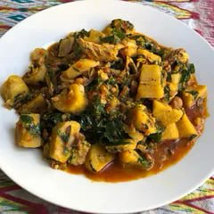

Beans and Ripe Plantain Porridge
A simple and nourishing Nigerian one-pot meal combining stewed beans with ripe boiled plantains. Serve hot for the best taste.
Preparation Time: 15 minutes
Cooking Time: 60 minutes
Servings: 4
Difficulty: There isn't much difficulty in the process, other than the preparation - the rest is a piece of cake.
Ingredients
- 2 cups of honey beans
- 4 ripe plantains (peeled and cut into chunks)
- 2 onion bulbs (chopped)
- 10 pieces of atarodo peppers
- 1 small bunch of scent leaves
- 1/2 cup palm oil
- 1 spoon salt tablespoons of vegetable oil
- 3 stock cubes
Instructions
- Pick, wash and boil the beans for about 20mins, then drain the water and wash the beans. Pour the beans back into the pot, add clean water and set on heat.
- Cook till beans is tender
- Meanwhile wash and blend the peppers, 1 bulb of onions.
- Slice the 2nd bulb of onion. Wash and slice the scent leaves.
- Also wash and peel the plantain and cut into small pieces.
- When the beans is tender, add the chopped onions, blended pepper mix, diced plantains, salt and 2 stock cubes. Add more water if necessary. Cover the pot and allow to cook for another 15 minutes.
- Add the palm oil. Taste for seasoning. Add the remaining stock cube if necessary and allow to cook for a further 7minutes. Add the chopped scent leaves. Stir gently and allow to cook on low heat for 5mins.
- Turn off the heat and allow beans to cool. Enjoy!
Tips
For extra flavor, add smoked fish to the beans porridge.
Be careful not to overboil the plantain.
Do not skip the onions they add key flavor!
Nutrition Facts
1 serving (250 grams) contains 350 calories, 12.0 grams of protein, 5.0 grams of fat, and 60.0 grams of carbohydrates.